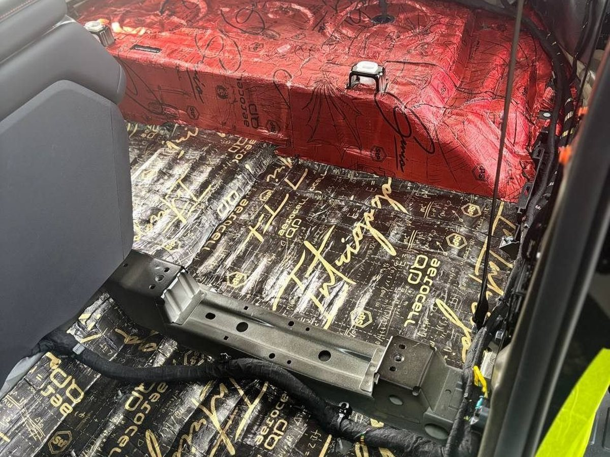
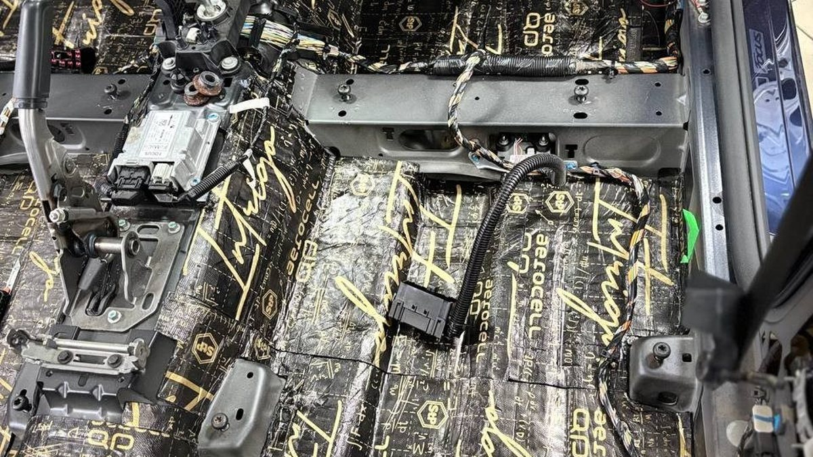
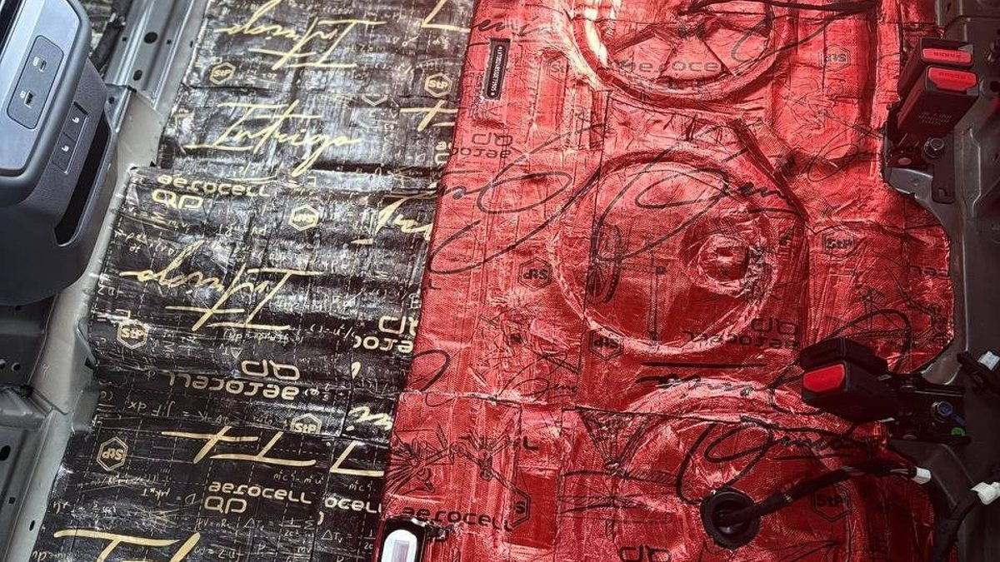

Самый навязчивый гул в машине идёт оттуда, куда вы никогда не смотрите. Вечер, Московский проспект, вы едете домой и говорите по громкой связи. Собеседник третий раз просит повторить. Вы повышаете голос, а сзади ребёнок, наоборот, что-то говорит вам, и вы не разбираете ни слова. Шум не резкий, не страшный. Он просто ровный, низкий и везде.
Источник у этого гула под ногами – пол и багажник. Под ковролином, под сиденьями, в нише запасного колеса.
Коварство в том, что такой шум не раздражает в моменте. Он не стучит и не свистит, поэтому его долго терпят и списывают на «такая машина». Замечают его только по последствиям: музыку приходится делать громче, разговаривать громче, а после часа в пробке на Октябрьском мосту вы выходите из машины уставшим, хотя почти не двигались.

Пол – самая большая металлическая поверхность в салоне. Снизу по нему бьёт всё: шум шин, вибрация от подвески, звук выхлопа, брызги и песок. Металл тонкий, а площадь огромная, поэтому даже слабая вибрация превращается в ощутимый низкий гул. Он похож не на звук, а на давление в ушах.
Заводская изоляция на полу у большинства машин есть, но это компромисс между весом, ценой и тишиной. Где-то под ковром лежат несколько пластин мастики, где-то – тонкий войлок. На ровной городской дороге этого хватает. На разбитом асфальте, на трассе и на зимней резине – уже нет.
В хэтчбеке, универсале и кроссовере багажник – часть салона. Ниша запасного колеса работает как большой барабан: днище там ровное и почти без рёбер жёсткости. Оттуда приходит тот самый гул, который сильнее слышат задние пассажиры. Добавьте сюда звук выхлопа, который проходит рядом, и тонкие задние арки, выходящие в багажник.
В седане багажник отделён, но и он передаёт шум через спинку заднего сиденья и полку.

Шумоизоляция пола – одна из самых трудоёмких работ. Нужно снять сиденья, вынуть ковролин, разобрать пороги и часть обшивок. Потом металл обрабатывают слоями: сначала то, что гасит вибрацию, затем то, что поглощает звук. Потом всё собирают обратно.
И вот здесь кроется главный риск. Когда машину вернули, вы видите тот же ковролин, что и раньше. Сколько материала легло, какого, в какую часть пола, проклеили ли нишу запаски и зону под задним сиденьем – с водительского кресла не понять никак. Неприятно узнать, что за полный пол заплачено, а сделана половина, только при следующем ремонте, когда снимут ковёр.
Отсюда простое правило: просите фото каждого этапа. Голый металл до работы, первый слой, второй, укладка обратно. Нормальный мастер не обидится на такую просьбу, а у вас останется понимание, что именно лежит под ногами.
Проверьте, что гул действительно снизу. На трассе положите ладонь на пол у ног или на тоннель – если чувствуется ровная вибрация и она растёт на грубом асфальте, это ваш случай. Попросите заднего пассажира сказать, где ему громче: у ног или у головы.
Если машина свежая и под ковром ещё чисто, сейчас удобный момент: потом к тем же работам добавятся сырость и песок, которые придётся вычищать.
Мы в Ярославле – студия «Автостиль», проспект Октября, 82б. Монтаж идёт вне зоны видимости клиента, поэтому каждый этап и каждый слой материала мы фотографируем и отдаём вам фотоотчёт. Подробнее о шумоизоляции пола и других зон – на странице про шумоизоляцию. Стоимость посчитаем по вашей машине: +7 902 220-75-55.